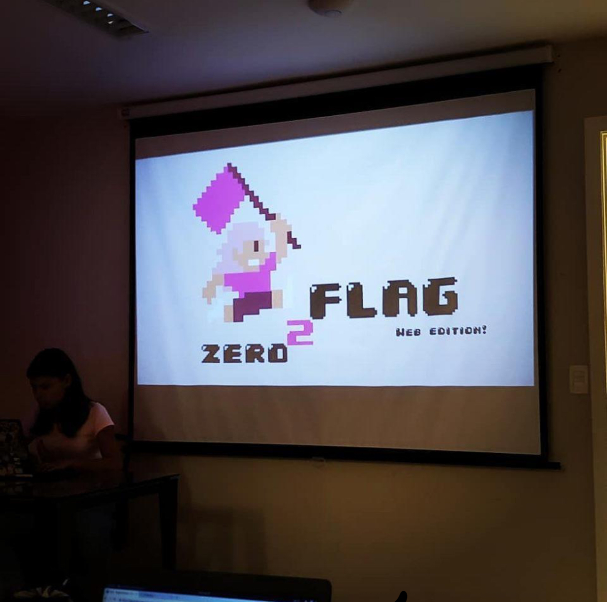
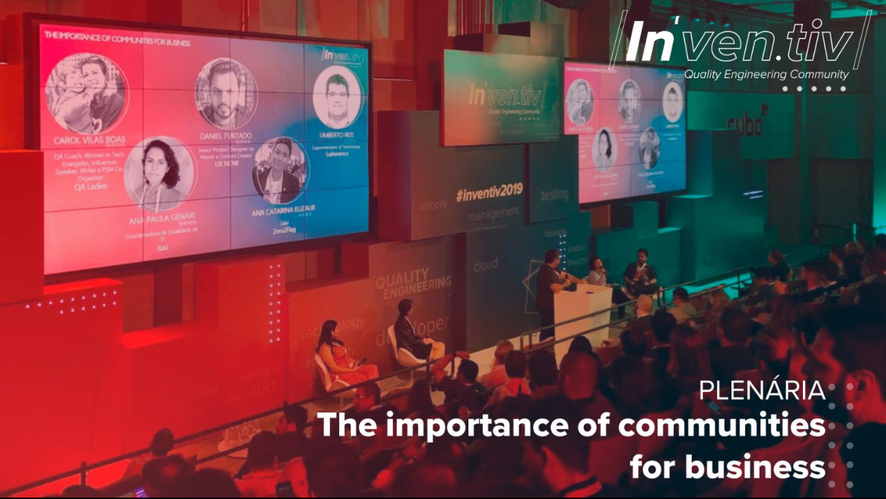
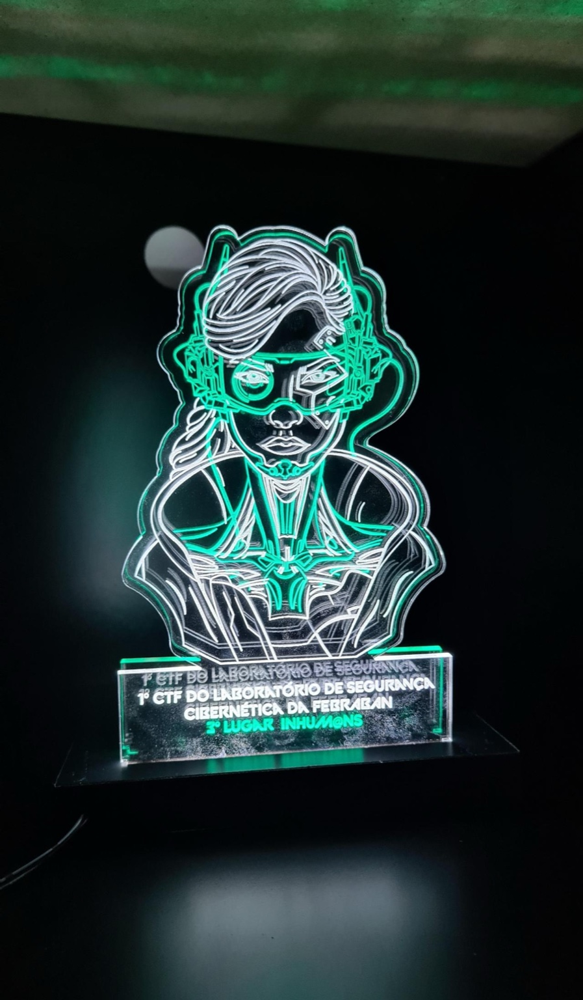
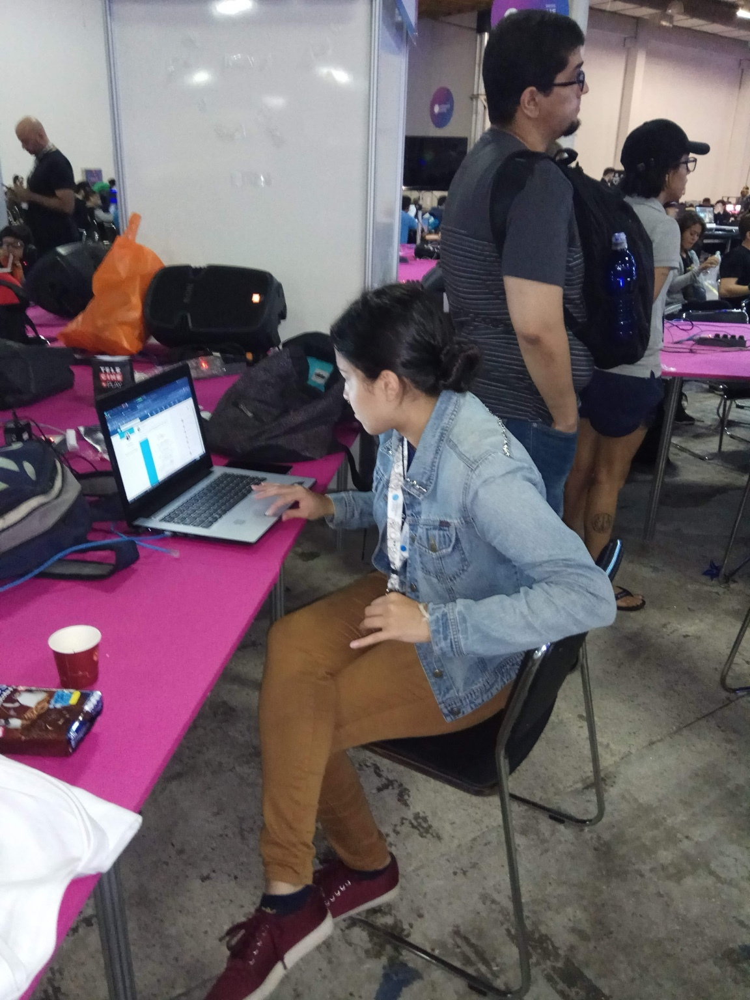
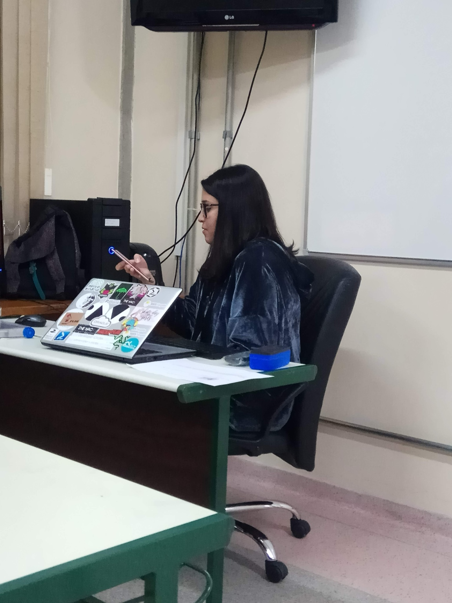
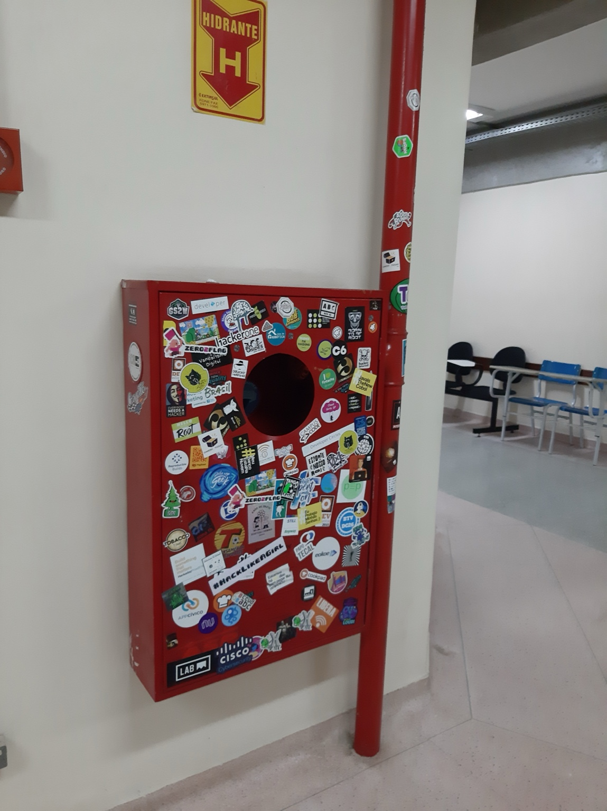

O zero2flag começou porque três mulheres em segurança ofensiva cansaram de ser sempre as únicas na sala. CTF atrás de CTF, quase nenhuma outra mulher jogando, estudando junto, ocupando espaço. Resolveram fazer barulho: montaram um projeto pra ensinar técnica, propor desafios e premiar quem resolvesse na hora. Sem enrolação, sem palestra motivacional. É sentar, quebrar e capturar a flag.

Os eventos presenciais viraram marca registrada. Cada edição com um tema novo, uma técnica nova pra aprender, e aquela mistura meio caótica de aprender fazendo com gente gritando quando a flag finalmente sai.

Quem hoje puxa o projeto é a Ana Catarina Elizaur. Entrou curiosa, virou líder da comunidade, e segue levando o zero2flag pra mais espaços — eventos, palestras, parcerias. A ideia segue a mesma: conteúdo técnico, sem paternalismo, direto.

Vieram as competições, os troféus, o reconhecimento. Bom, mas não era o ponto. O ponto sempre foi ver mais menina entrando no terminal, errando comando, lendo writeup, e descobrindo que dá conta.
Comunidade técnica ativa, conteúdo sobre segurança ofensiva publicado aberto, serviços de pentest pra quem contrata, e espaço pra quem tá querendo entrar na área ou trocar de carreira. Nada mágico, é estudar, praticar e aparecer.


